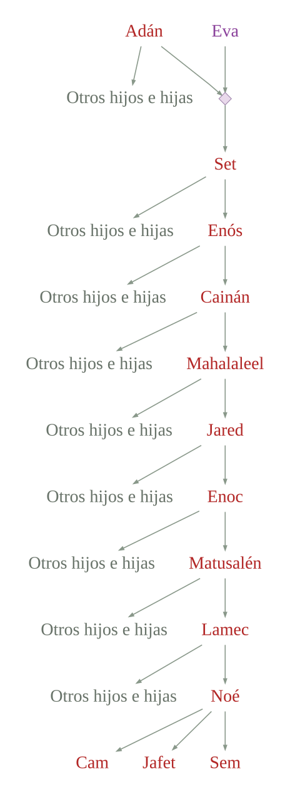

4:25 Y conoció de nuevo Adán a su mujer, la cual dio a luz un hijo, y llamó su nombre Set40: Porque Dios - dijo ella - me ha sustituido otro hijo en lugar de Abel, a quien mató Caín.
4:26 Y a Set también le nació un hijo, y llamó su nombre Enós. Entonces los hombres comenzaron a invocar el nombre de Jehová.41
5:1 Este es el libro de las generaciones de Adán. El día en que creó Dios al hombre, a semejanza de Dios lo hizo.
5:2 Varón y hembra los creó; y los bendijo, y llamó el nombre de ellos Adán42, el día en que fueron creados.
5:3 Y vivió Adán ciento treinta años, y engendró un hijo a su semejanza, conforme a su imagen, y llamó su nombre Set.43
5:4 Y fueron los días de Adán después que engendró a Set, ochocientos años, y engendró hijos e hijas.
5:5 Y fueron todos los días que vivió Adán novecientos treinta años; y murió.
5:6 Vivió Set ciento cinco años, y engendró a Enós44.
5:7 Y vivió Set, después que engendró a Enós, ochocientos siete años, y engendró hijos e hijas.
5:8 Y fueron todos los días de Set novecientos doce años; y murió.
5:9 Vivió Enós noventa años, y engendró a Cainán.
5:10 Y vivió Enós, después que engendró a Cainán45, ochocientos quince años, y engendró hijos e hijas.
5:11 Y fueron todos los días de Enós novecientos cinco años; y murió.
5:12 Vivió Cainán setenta años, y engendró a Mahalaleel46.
5:13 Y vivió Cainán, después que engendró a Mahalaleel, ochocientos cuarenta años, y engendró hijos e hijas.
5:14 Y fueron todos los días de Cainán novecientos diez años; y murió.
5:15 Vivió Mahalaleel sesenta y cinco años, y engendró a Jared47.
5:16 Y vivió Mahalaleel, después que engendró a Jared, ochocientos treinta años, y engendró hijos e hijas.
5:17 Y fueron todos los días de Mahalaleel ochocientos noventa y cinco años; y murió.
5:18 Vivió Jared ciento sesenta y dos años, y engendró a Enoc48.
5:19 Y vivió Jared, después que engendró a Enoc, ochocientos años, y engendró hijos e hijas.
5:20 Y fueron todos los días de Jared novecientos sesenta y dos años; y murió.
5:21 Vivió Enoc sesenta y cinco años, y engendró a Matusalén49.
5:22 Y caminó Enoc con Dios50, después que engendró a Matusalén, trescientos años, y engendró hijos e hijas.
5:23 Y fueron todos los días de Enoc trescientos sesenta y cinco años.
5:24 Caminó, pues, Enoc con Dios, y desapareció, porque le llevó Dios.51

5:25 Vivió Matusalén ciento ochenta y siete años, y engendró a Lamec.
5:26 Y vivió Matusalén, después que engendró a Lamec, setecientos ochenta y dos años, y engendró hijos e hijas.
5:27 Fueron, pues, todos los días de Matusalén novecientos sesenta y nueve años; y murió.
5:28 Vivió Lamec ciento ochenta y dos años, y engendró un hijo;
5:29 y llamó su nombre Noé, diciendo: Este nos aliviará de nuestras obras y del trabajo de nuestras manos, a causa de la tierra que Jehová maldijo.52
5:30 Y vivió Lamec, después que engendró a Noé, quinientos noventa y cinco años, y engendró hijos e hijas.
5:31 Y fueron todos los días de Lamec setecientos setenta y siete años; y murió.
5:32 Y siendo Noé de quinientos años, engendró a Sem, a Cam y a Jafet.53
AÑOS DESDE LA CREACIÓN
Diez generaciones
Según las edades de Génesis 5 · texto masorético / RVR1960
Matusalén alcanza el año del Diluvio y Lamec muere cinco años antes, en 1651. El texto no especifica cómo murió Matusalén. Enoc es trasladado por Dios, no se relata su muerte. Noé nació en el año 1056.
Cálculo basado en el texto masorético; otras tradiciones textuales ofrecen cifras diferentes.